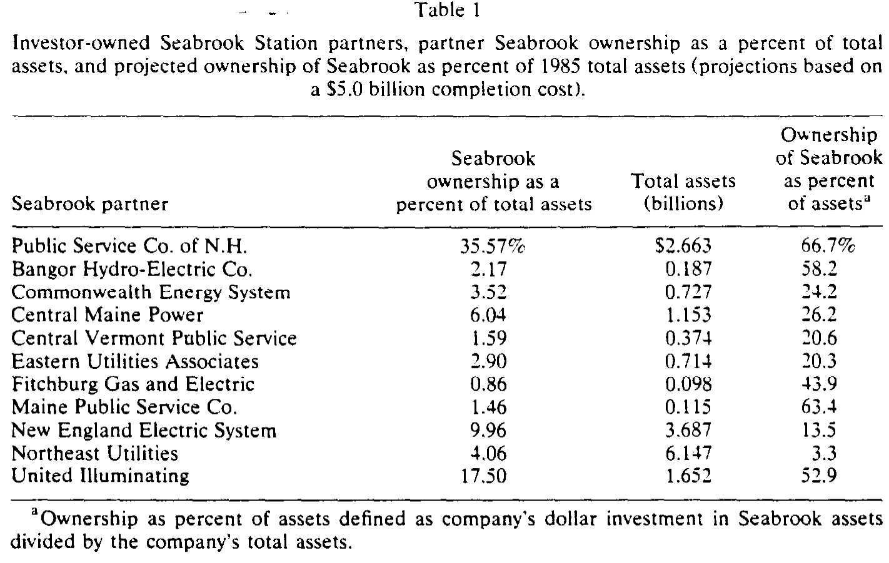
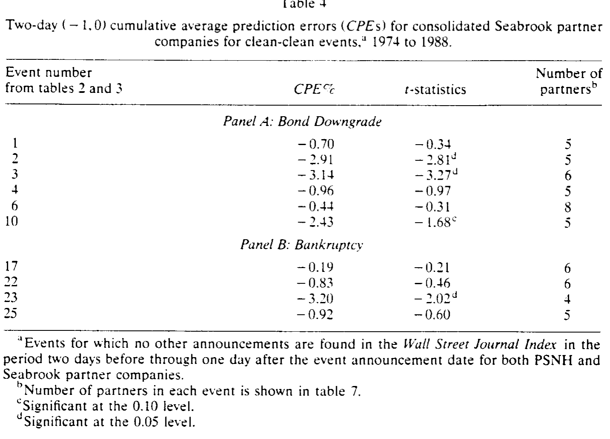
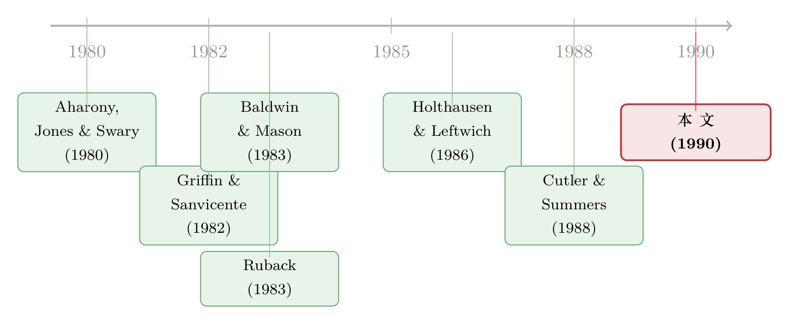

监管者能撤销的坏消息，市场就当它没发生过
本文读的是 Kaen & Tehranian (1990, JFE)：1972 年宣布、1988 年以管理方破产收场的 Seabrook 核电站，是一座现成的「财务困境实验室」。作者把它身上发生的五十来桩坏消息分成两类——关于「付给证券持有人多少现金」的，和关于「资产本身值多少钱、要花多少钱」的——结果发现：前者把股价砸出 -20.39% 的两日累计异常收益，后者几乎纹丝不动。原因藏在「监管」二字里。
1 一座盖了十六年的核电站，和一个尴尬的问题
先讲一个看上去稀松平常的故事。
1972 年，美国新罕布什尔州的公共服务公司（Public Service Company of New Hampshire，下称 PSNH）宣布要在海边小镇 Seabrook 盖一座核电站，预算 10 亿美元，PSNH 自己持有 50%。问题是，PSNH 当时的全部资产也才 10 亿美元——它要靠一个项目把自己的资产规模再翻一倍。十一家私营、五家公营的电力公司随后入伙。
接下来的十六年，是一部「财务困境的连续剧」：开工拖到 1976 年才破土，造价从 10 亿一路飙到 50 亿，评级被穆迪和标普一级一级地往下砍，最后在 1988 年 1 月 29 日，PSNH 申请了 Chapter 11 破产保护。1990 年 3 月电站才拿到满功率运营许可，还带着未了的诉讼。
到这里，故事还只是又一个「大项目拖垮一家公司」的老套路。但作者真正想问的，是一个更刁钻的问题。
绝大多数事件研究 (event study) 是这样做的：找几百家公司，看它们对同一类事件（一次并购、一次分红、一次增发）的平均股价反应。这套做法很有力，却回答不了另一个问题——当同一家公司、围绕同一个持续事件（盖这座电站），接连不断地收到各种各样的坏消息时，市场是怎么逐条消化的？ 哪一类消息真正动了股价，哪一类只是「听过就算」？
Seabrook 恰好给了一个干净的样本：同一个项目，同一批公司，十六年里五十桩可以逐一定性的财务事件。作者要做的，就是把这五十桩消息一条一条摆到股价面前，看市场到底听进去了哪些。
2 关键的一刀：把坏消息切成两半
整篇论文的精髓，在于作者切分事件的那一刀。
他们把全部事件分成两大类。第一类，作者称之为 财务状况事件（financial status events）：关于 PSNH 将要付给债券持有人和股东的现金「质量和数量」的消息——评级变动、财报被审计师出具保留意见、破产预警。这类消息说的是「证券持有人能拿到多少钱」。一共 26 桩。
第二类，叫 资产价值事件（asset value events）：施工延误、司法与监管裁决、造价上修、产权变更、政治气候变化。这类消息说的是「这座电站本身值多少、还要烧多少钱」，对应的是公司的经营与投资现金流。一共 24 桩。
为什么这一刀这么关键？因为 PSNH 是一家受监管的公用事业。在管制的世界里，监管机构握着一根别处没有的杠杆——费率制定权 (rate setting)。一笔意料之外的经营现金流冲击，无论是好是坏，监管者都可以通过调整电价、把成本转嫁给纳税电费的居民，从而「撤销」(undo) 掉它。
于是一个自然的推论出现了：如果市场参与者相信监管会把经营层面的冲击抹平，那么关于经营/投资现金流的坏消息，理应在股价上掀不起多大波澜；真正不可逆、监管也兜不住的，是那些直接关乎「还不还得起债、付不付得出息」的现金分配消息。
这就是全文反复要锤的那一个核心：在受监管的行业里，市场对「付给证券持有人的现金」和「资产经营的现金」给出了截然不同的定价。前者是真信息，后者近乎噪声。
3 识别策略：一把标准的事件研究尺子
要验证这个推论，作者用的是经典的事件研究方法——但有几处值得说道的细节。
样本是 CRSP 上 1972 年 2 月 1 日到 1988 年 1 月 29 日的日度收益（最后一个月的数据因 CRSP 尚未更新，是从《华尔街日报》手工抄录、并做了股利调整的）。每一桩事件的「异常收益」，是用一个同时含市场指数和行业指数的双因子模型算出的预测误差：
$$ PE_{jt} = R_{jt} - \left( \hat{a}_j + \hat{b}_1 R_{Ut} + \hat{b}_2 R_{Mt} \right) $$
这里 \(R_{jt}\) 是公司 \(j\) 在事件日 \(t\) 的收益，\(R_{Mt}\) 是 CRSP 等权市场指数收益，而 \(R_{Ut}\) 是一个等权公用事业指数的收益——由 52 家与 PSNH 同属一个四位行业代码、却不沾 Seabrook 的公用事业构成。多放一个行业指数，是为了把「整个公用事业行业一起涨跌」的部分剔掉，只留下真正属于 Seabrook 的那部分冲击。
有两个不太常规、却很有讲究的处理：
其一，估计窗口放在事件之后，取 \(t+61\) 到 \(t+360\)。一般人习惯用事件前的数据估 beta，但作者担心：财务困境本身会改变公司的市场风险，事件前的 beta 已经「不干净」了，所以用事件后的稳态来估。（他们也试过事件前窗口 $-136$ 到 $-16$，结论不变。）
其二，对收益做了「清洁度」体检。财务困境消息常常扎堆——比如第 7、8、9、19 号事件挤在五个交易日内，第 5 和第 21 号干脆挨在一起。作者翻遍《华尔街日报》索引，把「前两天到后一天」窗口内没有其它新闻干扰的事件标记为 clean，其余标记为 contaminated。后面真正用来下结论的，是这些干净事件。
异常收益的显著性，用一个基于预测误差时间序列方差的 \(t\) 统计量来检验，假定服从自由度为 99 的 Student-\(t\) 分布，做法沿用 Holthausen and Leftwich (1986)。两日公告窗口取 \((t=-1, t=0)\)——因为公告究竟在交易日的哪个时点发布无从知晓，索性把见报日和前一日都算进去。
这套「双因子 + 事件后估计窗 + clean/contaminated 标记」的组合拳，本质上是在跟事件研究里两个老大难较劲：风险漂移和事件污染。关于后者——事件本身会把方差吹大、让 \(t\) 值系统性失真——可参见《你的 t 值在撒谎：当事件本身把方差吹大了》。
4 主要结果：被听进去的，和被无视的
先看 Seabrook 的合伙人都是谁、各自押了多大的注。表 1 列出了到 1985 年底仍持有股份的私营合伙人——PSNH 自己把 35.57% 的总资产压在了 Seabrook 上，按 50 亿造价折算，相当于 1985 年总资产的 66.7%；其余合伙人的敞口从 3% 到 67% 不等，九家超过 20%。这不是几个无关痛痒的小股东，而是一群把身家相当一部分绑在同一座电站上的公司。

Table 1
接着，是全文最有力的那组数字。
关于「现金分配」的坏消息，市场反应剧烈。 在 16 次评级变动中，13 次是债券（或债券加优先股）降级。作者发现：
- 在只用 clean 事件的样本里，PSNH 债券降级的两日累计异常收益高达
-20.39%，\(t = -4.70\)，在 0.01 水平上显著。 - 13 次债券降级里有 12 次伴随负异常收益，其中 5 次单独显著，累计预测误差
-17.49%，同样在 0.01 水平显著。 - 「跌穿投资级」这条线尤其要命：1983 年 1 月 18 日第一次被降到投资级以下，单日两日异常收益就是
-6.37%（\(t = -4.02\)）。这与 Holthausen and Leftwich (1986) 的发现一致——跨字母等级的降级（如 A 到 BBB）比同级内调整冲击更大。
一个特别精巧的对照藏在 1982 年 5 月 15 日：PSNH 宣布要发行 1000 万美元新债，公告本身只带来 0.15% 的、统计上不显著的反应；可正是这次发债触发了标普的评级复审，最终把 PSNH 债券降到投资级以下，这一降，又砸出 -3.78% 的显著负收益。市场对「发债」无动于衷，却对「发债引出的降级」反应强烈——它在乎的从来不是融资动作，而是融资动作泄露出的「还债能力」信号。
而关于「资产价值」的坏消息，市场近乎无视。 施工延误、造价上修、监管裁决这些资产价值事件，对合伙人股价基本没有触发任何价格运动，对 PSNH 自己的股价影响也很小、甚至没有。
还有两类「不显著」同样重要，因为它们恰好卡在理论的预言上：优先股降级没有带来显著异常收益（与 Stickel (1986)、Davidson and Glasnock (1985) 一致），债券升级也没有（与 Holthausen and Leftwich (1986) 一致）。坏消息里，唯独「债券降级」这一条——最直接地威胁到现金偿付——被市场认真听了进去。
5 传染：合伙人为什么跟着一起跌？
故事到这里还差一个反转：PSNH 的麻烦，凭什么要让别的合伙人公司跟着跌？
作者的第二个问题正是这个——管理方的经济困境，有多少反映在了其它私营合伙人的股价里？答案是：几乎一模一样。表 2 第 5 列显示，Seabrook 合伙人组合（不含 PSNH 的等权组合）对 PSNH 评级变动的反应「与 PSNH 的结果几乎完全相同」。其中头两次显著的合伙人负收益（事件 2、3），正对应 1982 年 PSNH 债券被降到投资级以下的两次——PSNH 的降级，对合伙人股东也是坏消息。
为什么？因为几乎每一次 PSNH 评级变动的说明里，都把 Seabrook 列为「主因」。评级机构在替市场说一件事：这座电站的麻烦是共有的，谁持股谁担着。
为了把传染坐实，作者又做了一层去噪。他们构造了所谓 clean-clean 事件——不仅 PSNH 这边在窗口内没有其它新闻，连每一个合伙人自己在窗口内也没有无关公告（有的就把那家公司从组合里剔掉）。表 3 是一张矩阵，标出在债券降级与破产两类事件下，哪些合伙人对各自而言是干净的。

Table 4
如表 4 所示，所有 clean-clean 事件的符号无一例外是负的。尽管层层去噪之后单个事件的统计显著性被削弱（比如事件 10 的合伙人组合两日 CPE 为 -2.43%，\(t=-1.68\)，仅在 0.10 水平边缘显著），但「方向全负」这一点本身就是强证据：合伙人股价的下跌不是噪声，而是对同一笔现金流威胁的共同反应。
6 文献脉络：从「评级是不是信息」到「哪种现金流才是信息」
把这篇论文放回它生长的那条线上，叙事就清楚了。
最早的一个根，是 破产与困境的市场反应。Aharony, Jones and Swary (1980) 用资本市场数据分析了公司破产的风险收益特征，Clark and Weinstein (1983) 研究破产公司普通股的行为——这一支告诉我们：财务困境是会在股价里留下痕迹的。
第二个根，是 评级变动的信息含量。Griffin and Sanvicente (1982) 比较了评级变动与股票收益的不同方法，Holthausen and Leftwich (1986) 则给出了最干净的证据：债券降级伴随负异常收益、跨等级降级冲击更大、而升级没有反应。本文关于 PSNH 评级的发现，几乎是这套结论在单一公司上的逐条复现——这既是验证，也是借力。

第三个根，也是本文方法上的直接灵感，是 「聚焦单一事件、深挖一家公司」的临床式研究。Baldwin and Mason (1983) 解剖 Massey-Ferguson 的困境求偿，Ruback (1983) 做 Cities Service 收购案例，而 Cutler and Summers (1988) 用 Texaco-Pennzoil 诉讼去质疑讨价还价理论和破产成本在资本结构理论中的分量。本文在引言里明说，正是这批工作启发了它「用一个聚焦案例去问大问题」的取径。（Cutler-Summers 那一篇的中文评述，见《一纸诉状，凭空蒸发 2100 万——官司里被「财务困境」偷走的钱》。）
本文站在这三条线的交汇处，却拐了个新弯：它不满足于「困境会影响股价」「评级是信息」，而是进一步追问——在一个被监管的世界里，哪一种现金流的消息才算信息？ 它给出的答案是：能落到证券持有人口袋里的那种。这是它真正的增量。
7 评论与延伸（Q&A + 研究方向）
(a) 几个可能的疑问
Q：把事件分成「财务状况」和「资产价值」两类，会不会是作者事后挑出来的？
这是最该警惕的地方。分类是作者自己定的，而非外生给定，难免有「为了得到漂亮对比而切分」的嫌疑。好在分类标准事前就讲得很清楚（现金分配 vs 经营/投资），而且落点很硬：唯一显著的子类恰好是「债券降级」，连优先股降级、债券升级都不显著——若是随意切分，很难这么整齐地卡在理论预言上。
Q：-20.39% 这个数字，是不是被「评级降级往往滞后于坏消息」给夸大了？
有这个风险。评级是对已有信息的确认，降级日的反应里可能混着同期其它坏消息。作者的应对就是 clean / clean-clean 标记——只保留窗口内无其它新闻的事件。即便如此，clean 样本里降级仍砸出
-20.39%，说明评级动作本身确实携带了增量信息，而非纯粹的「旧闻确认」。
Q：为什么估计窗口要放在事件之后？这不奇怪吗？
因为财务困境会改变公司的系统性风险（beta）。用事件前数据估出来的 beta，到了事件期已经不适用了，会污染异常收益的计算。作者用事件后的稳态来估，并验证了用事件前窗口结论不变——这是个诚实的稳健性交代。
Q：合伙人跟着跌，会不会只是「公用事业行业一起跌」，而非 Seabrook 特有的传染？
作者早有防备：预测误差里已经减掉了一个由 52 家不沾 Seabrook 的同行业公司构成的等权行业指数。剩下的负收益，是行业之外、专属于 Seabrook 敞口的那一块。再加上 clean-clean 组合「符号全负」，传染的解释相当稳。
Q：这套「监管能撤销经营冲击」的逻辑，能推广到非监管行业吗？
不能直接推。本文结论的前提正是「监管者握有费率杠杆，能把经营现金流冲击转嫁给电费用户」。在没有这层费率保护的竞争性行业里，关于资产价值/经营现金流的坏消息理应是会动股价的——本文恰恰是用监管这个特例，反衬出「现金分配 vs 资产价值」这条裂缝。
Q：样本只有一家公司、一个项目，外部效度够吗？
这是临床式研究与生俱来的代价：深度换广度。单案例没法做大样本统计推断，结论的普适性靠的是机制的可信度而非样本量。作者也很克制，把它定位成「一个聚焦的观察」，而非对所有受困公司的普遍断言。
(b) 几个可能的研究问题与提案
1. 把同一刀切到公司债市场，而不是股票市场。
【经济故事】本文看的是股价，可「现金分配 vs 资产价值」这条裂缝在债券价格里应该更锋利——债权人对偿付能力的敏感度天然高于对资产长期价值的敏感度。在受监管公用事业里，债券对评级/偿付消息的反应是否系统性强于对造价/延误消息的反应？ 【可行性】中。需要 TRACE 之后的公司债成交数据 + 评级事件 + 监管裁决时间线；难点在于公用事业债流动性差、成交稀疏，事件窗口里可能没有成交价。识别上可借鉴本文的 clean 标记。
2. 外资持有人会不会更「读不懂」监管这层缓冲？
【经济故事】本文的核心机制依赖投资者理解监管能撤销经营冲击。如果一部分持有人（比如外资机构）对本地费率制定规则不熟，他们可能对资产价值事件反应过度、对真正的现金分配事件反应不足。同一只受监管公用事业股票，外资持股比例高的时段，事件反应结构会不会不同？ 【可行性】中偏低。需要分投资者类型的持仓/交易数据（如 13F 或托管层面的国别数据）与受监管行业的事件序列对齐；外资敞口在公用事业里通常偏低，样本可能稀薄。
3. 监管「缓冲」的强弱可不可以被量出来，并解释横截面差异？
【经济故事】不同州、不同监管委员会的费率转嫁意愿天差地别。可以构造一个「监管友好度」指标（历史上准予转嫁的比例、rate case 的平均裁决），预测：监管越宽松（越容易撤销经营冲击）的公司，其股价对资产价值事件越不敏感。这把本文的单案例机制变成可检验的横截面假设。 【可行性】高。监管裁决数据（EIA、各州 PUC 记录）公开可得，公用事业样本量足够做面板，识别靠「监管严格度 × 事件类型」的交互项。这是最 doable 的一个方向。
4. 困境传染的「渠道」：评级机构是不是放大器？
【经济故事】本文中合伙人之所以跟跌，一个关键是「PSNH 每次降级都把 Seabrook 列为主因」——评级机构在替市场协调信念。那么评级机构的措辞本身（是否点名共同项目）是否能预测传染的强弱？这把传染从「敞口决定」推进到「信息中介决定」。 【可行性】中。需要逐条手工读取评级说明文本（Moody's、S&P 的 rationale），做文本编码；样本可扩展到其它有共同大项目的合资联营（管道、电厂、矿山）。识别靠「是否点名共同项目 × 合伙人异常收益」。
8 我的判断
这篇论文的贡献，不在方法的新颖——它用的是 1980 年代已经成熟的事件研究工具箱；而在问题的切法。它把「财务困境如何影响股价」这个被问烂了的问题，重新表述成「在监管缓冲存在的前提下，哪一种现金流的消息才被市场当真」，并用一座盖了十六年、坏消息源源不断的核电站，给出了一个结构整齐到近乎漂亮的答案：债券降级砸出 -20.39%，而造价翻五倍、工期拖十年的资产价值消息近乎无声。这条「现金分配 vs 资产价值」的裂缝，至今仍是理解受监管行业信息定价的一个好框架。
对识别的担忧也很实在。事件分类的事后性是头号软肋——尽管落点整齐，但谁来保证另一种切法不会得到别的故事？单案例的外部效度是第二个——结论严重依赖「监管能转嫁成本」这一特定制度前提，换到竞争性行业未必成立。第三，评级降级与坏消息的内生时序——clean 标记缓解了它，却没能完全切断「降级只是确认旧闻」的可能。
我最想看到的后续，是把这把「现金分配 vs 资产价值」的尺子搬到公司债市场和横截面上去：用各州监管友好度的差异，把本文的单案例机制变成一个可证伪的面板假设——监管越能撤销经营冲击的地方，资产价值消息就越该「沉默」。如果这个交互项稳健地成立，那这篇 1990 年的临床研究，就真正从一个精巧的故事，长成了一条可推广的规律。
参考文献
Aharony, Joseph, Charles P. Jones, and Itzhak Swary (1980). An analysis of risk and return characteristics of corporate bankruptcy using capital market data. Journal of Finance 35, 1001–1016.
Baldwin, Carliss Y. and Scott P. Mason (1983). The resolution of claims in financial distress: The case of Massey-Ferguson. Journal of Finance 38, 505–516.
Brown, Stephen J. and Jerold B. Warner (1983). Using daily stock returns: The case of event studies. Journal of Financial Economics 14, 3–31.
Clark, Truman A. and Mark I. Weinstein (1983). The behavior of the common stock of bankrupt firms. Journal of Finance 38, 489–516.
Cutler, David M. and Lawrence Summers (1988). The cost of conflict resolution and financial distress: Evidence from the Texaco-Pennzoil litigation. Rand Journal of Economics 19, 157–172.
Davidson, Wallace N. and John L. Glasnock (1985). The announcement effects of preferred stock re-ratings. Journal of Financial Research 8, 317–325.
Griffin, Paul A. and Antonio Z. Sanvicente (1982). Common stock returns and ratings changes: A methodological comparison. Journal of Finance 37, 103–119.
Holthausen, Robert W. and Richard W. Leftwich (1986). The effect of bond rating changes on common stock prices. Journal of Financial Economics 17, 57–89.
Kaen, Fred R. and Hassan Tehranian (1990). Information effects in financial distress: The case of Seabrook Station. Journal of Financial Economics 26, 143–171.
Ruback, Richard S. (1983). The Cities Service takeover: A case study. Journal of Finance 38, 319–330.
Stickel, Scott E. (1986). The effect of preferred stock rating changes on preferred and common stock prices. Journal of Accounting and Economics 8, 197–215.